RESUMO
Nesta página será abordado o que é o VRML, para que serve, e quais os requisitos básicos para utilizá-lo. Em seguida serão apresentados alguns experimentos feitos, exemplificados com fotos. Um deles feito com o Google SketchUp.
INTRODUÇÃO
De acordo com que o mundo evolui, novas tecnologias vão surgindo. Neste meio tempo surgiram a realidade virtual e a modelagem 3D. Com a popularidade destas tecnologias viu-se necessário a criação de um padrão de formato para elas. Eis que surge o VRML, um padrão de formato de arquivo para realidade virtual, predecessor do famoso X3D.
Este trabalho visa abordar o que é modelagem 3D, o que é VRML, como ele é utilizado no mercado de trabalho, e trazer uma experiência de modelagem 3D no formato VRML feita com a ferramenta Google SkethUp.
A metodologia basea-se em pesquisas em artigos e sites, e a experiência tem por base a tentativa e erro até chegar ao acerto. Este trabalho está dividido em quatro seções: a introdução; o desenvolvimento, que aborda a modelagem 3D e VRML e seus subtópicos; o experimento realizado; e a conclusão.
MODELAGEM 3D
Desde o surgimento da interface gráfica é pensado a modelagem 3D como um assunto computacional. Ela é basicamente o processo de se criar um objeto que contenha, claro, 3 dimensões. Para tal são utilizados programas específicos. É possível simular objetos, cenários e personagens em cenas animadas ou estáticas.
Ela é uma tecnologia ampla, e pode ser utilizada desde a área de arquitetura até a área de jogos. Ilustrações e filmes são as áreas que mais utilizam a tecnologia. Está muito presente no cotidiano de todas as pessoas.
VRML
CONSIDERAÇÕES INICIAIS
O VRML foi criado para ser o padrão de formato de arquivo para realidade virtual, utilizado tanto para a Internet como para ambientes desktop. Ele contém nada mais que a descrição de um ambiente.
É importante frizar que VRML não é uma linguagem puramente de modelagem e nem de realidade virtual: ela tem poucos recursos de modelagem geométrica e contém muitas funções que extrapolam as de uma linguagem de modelagem, e não contém imersão, ou seja, não é preciso um óculos ou outro meio de imersão.
UTILIZAÇÃO NO MUNDO
A utilização desta linguagem no mundo é muito clara. Por meio desta linguagem, escrita em modo texto, é possível criar objetos tridimensionais podendo definir cor, transparência, brilho, textura, etc.
A LINGUAGEM VRML
Abaixo um exemplo de código retirado do site www.inf.pucrs.br que mostra como é a linguagem VRML.
#VRML V2.0 utf8
# The VRML 2.0 Sourcebook
# Copyright (c) 1997
# Andrea L. Ames, David R. Nadeau, and John L. Moreland
# A brown hut
Group {
children [
# Draw the hut walls
Shape {
appearance DEF Brown Appearance {
material Material {
diffuseColor 0.6 0.4 0.0
}
}
geometry Cylinder {
height 2.0
radius 2.0
}
},
# Draw the hut roof
Transform {
translation 0.0 2.0 0.0
children Shape {
appearance USE Brown
geometry Cone {
height 2.0
bottomRadius 2.5
}
}
}
]
}
REQUISITOS PARA EXECUTAR
Para conseguir visualizar os documentos em VRML é necessário que o navegador tenha instalado um plug-in que tem a função de ler estes documentos. Existem vários disponíveis para os navegadores.
Ao criar um documento em VRML, deve-se lembrar de que ele é dividido em componentes, como os documentos HTML. O principal e o único obrigatório é o Header. Outros componentes importantes, mas não obrigatórios são: Prototypes; Shapes, Interpolators, Sensors, Scripts; e Routes.
Mas criar um documento inteiro escrevendo, por se tratar de criação de imagens, pode ser muito demorado e dispendioso. Por isto é recomendado a utilização de uma aplicação, como o Google SketchUp. Nele é possível desenhar um modelo 3d e exportar para VRML, como no experimento realizado abaixo.
EXEMPLO REAL DE APLICAÇÃO
Leandro Campos e Marcos Ribeiro, em seu trabalho de realidade virtual aplicada a e-commerce, eles propuseram uma plataforma que é uma proposta de arquitetura para o desenvolvimento de lojas virtuais 3D. Eles utilizam HTML para apresentação do website, a linguagem PHP para escrever os scripts do lado servidor, o banco de dados MySQL, e o VRML como tecnologia de Realidade virtual.
Através de um navegador de internet com um plug-in para interpretar o VRML, ao acessar o site com o projeto deles é encontrado uma loja virtual 3D, na qual é possível locomover e selecionar objetos utilizando o teclado e o mouse.
EXPERIMENTO REALIZADO
Utilizando a ferramenta Google SketchUp Pro 2018 foi possível realizar o experimento abaixo descrito. Descreverei passo a passo de como utilizar.
Ao iniciar o projeto é possível identificar algumas estruturas prontas no canto direito. Utilizaremos a armação de piso para criar um piso.
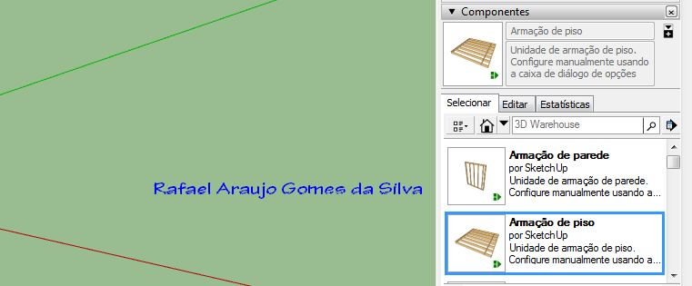
Você pode coloca-lo onde e quantos quiser.
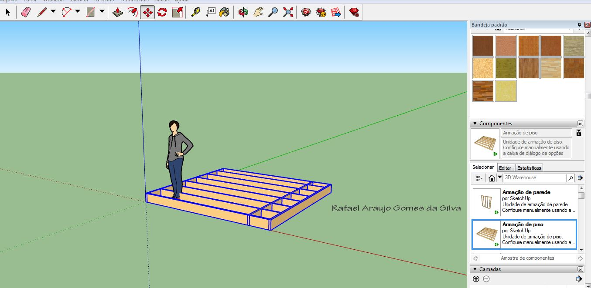
Após, no experimento, comecei a colocar paredes.
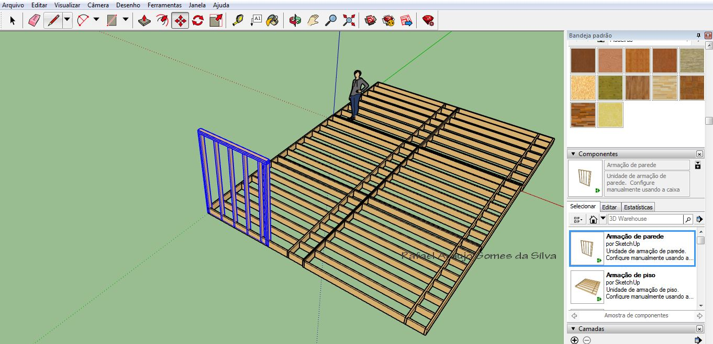
Dica: utilize o botão do meio do mouse ara girar a câmera.
Você vai notar que a parede só fica naquele ângulo. Pode ser usado esta ferramenta para rotacionar a figura:
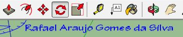
Clique e segure em cima da figura na posição do eixo no qual quer rotacionar. No caso vamos rotacionar no eixo z (azul).
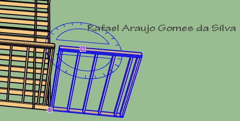
Arraste até a frente que deseja girar, no caso arrastei até o eixo y (verde). Note que a linha pontilhada ficou verde na parte de baixo.
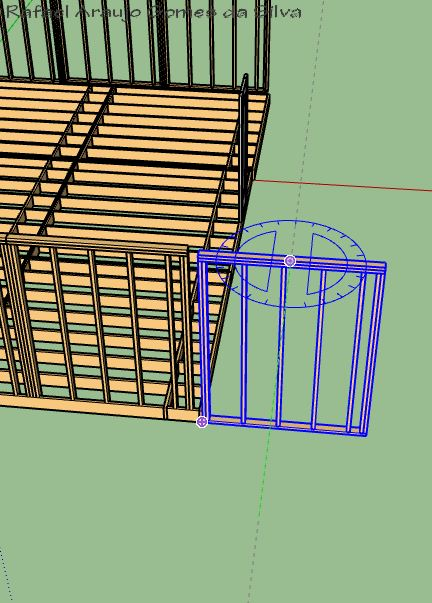
Então arraste até a posição desejada e clique novamente para fixar.
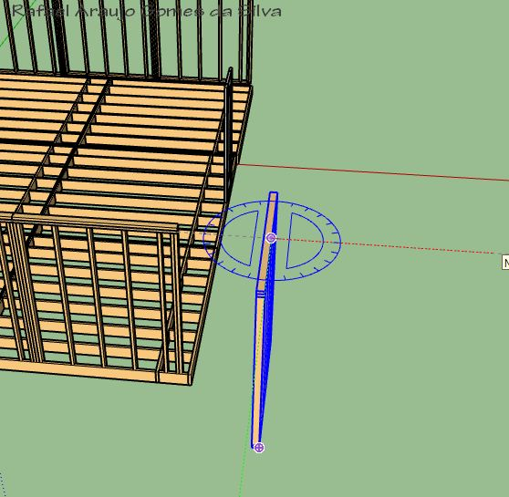
Clique no objeto utilizando a seta e então utilize o atalho de copiar (Ctrl+c) para copiar a figura do jeito que está, e então colá-la (Ctrl+v). Você também pode utilizar a função de redimensionar:
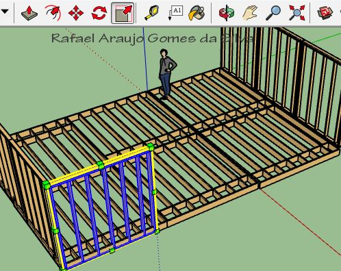
Este é o básico. Com os objetos prontos e uma boa imaginação é possível construir um bom modelo. Abaixo, depois de alguns minutos na ferramenta, o resultado final.
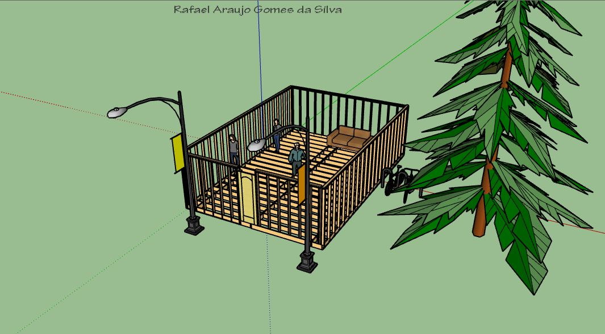
Para salvar e poder utilizar como VRML basta clicar em arquivo, coloque o mouse em cima de exportar, e clique em Modelo 3D.
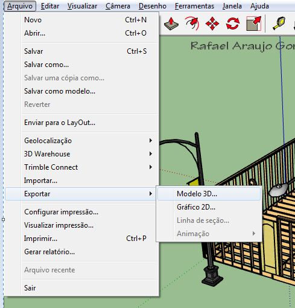
Depois escolha um nome, selecione a opção arquivo VRML, escolha uma pasta no seu computador para salvar e clique em exportar.
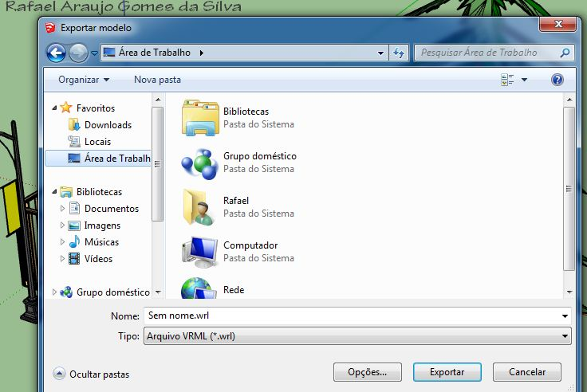
BIBLIOGRAFIA
MANSSOUR, Isabel Harb. Introdução à VRML 2.0. Disponível em: <www.inf.pucrs.br>.
CAMPOS, Leandro Silva, RIBEIRO, Marcos Wagner de Souza. Realidade Virtual Aplicada A E-Commerce: Proposta De Plataforma Baseada Em VRML E PHP. Grupo de Realidade Virtual de Goiás – GRVG - Instituto Luterano de Ensino Superior de Itumbiara Av. Beira Rio, 1001 – Bairro Nova Aurora, Itumbiara-GO. Disponível em: <www.lbd.dcc.ufmg.br>.
FERRAZ, Ricardo Cerqueira. A Utilização De Ambientes Virtuais Em Vrml Para A Informática Na Educação. Vitória da Conquista – BA, 2010. Disponível em: <www2.uesb.br>.